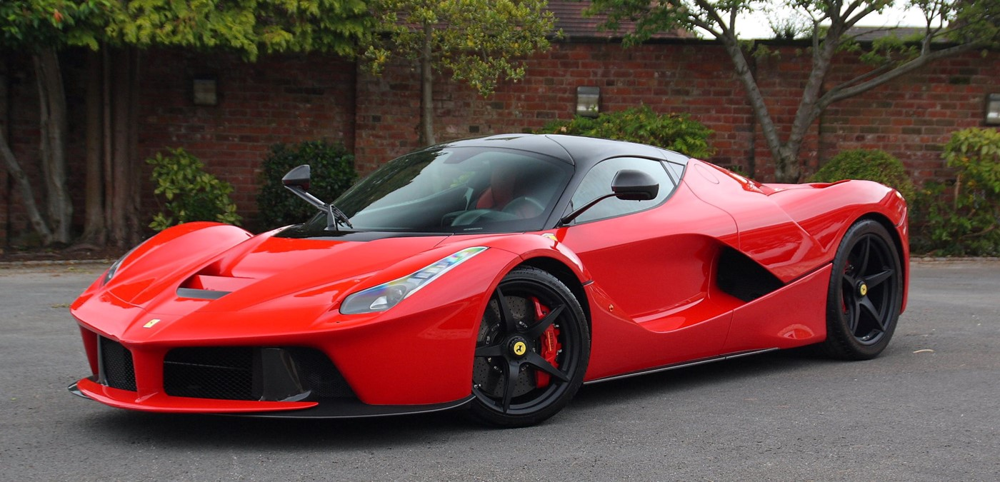

Vehículos del mes.
Porsche 911 GT3 RS.

518 caballos con un 0-100 en 3 segundos. Monta un motor bóxer atmosférico de 6 cilindros.
Ferrari LaFerrari.
Con un V12 atmosférico híbrido, se entregan +963 caballos de potencia.
Vehiculos exclusivos. Servicio premium. Calidad inigualable.
En nuestro concesionario encontrarás los vehículos más exclusivos.
518 caballos con un 0-100 en 3 segundos. Monta un motor bóxer atmosférico de 6 cilindros.
Con un V12 atmosférico híbrido, se entregan +963 caballos de potencia.
El nuevo acuerdo entre las 2 grandes empresas tiene un extra para los clientes: Los coches que salen del concesionario Luxury Cars llevan unos neumáticos Pirelli, listos para pisar el asfalto. Según el CEO de Luxury Cars, Dorin Daniel: "Este acuerdo es un hito para nuestra empresa, los clientes van a ver la calidad de nuestro servicio en todos los detalles, para que jamás se olviden de la experiencia brindada en nuestro negocio.". Con esta información brindada, solo nos queda felicitar a la empresa por sus continuos logros.
Inauguramos la nueva apertura del concesionario ubicado en Mairena del Aljarafe, en Sevilla. Con esta nueva apertura, ya van 3 los concesionarios que poseemos en LuxuryCars. Recordamos la ubicación de todos los concesionarios: